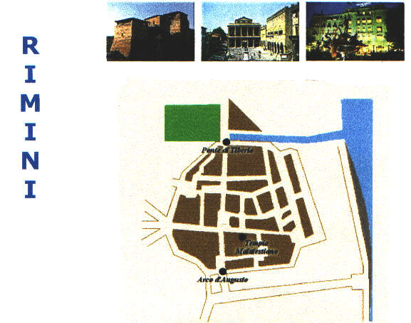

E... il 7 maggio cambiò la nostra vita...
Ma perchè?
Che domanda banale!!! Siamo andati a RIMINI....!
Allora...abbiamo imparato che Rimini fu fondata dagli eroici Romani nel 268 a.c. tra i corsi d'acqua Ausa e Marecchia.
Nel lontano IV secolo a.c. la città conservava ancora la sua importanza , grazie ai monumenti del centro urbano (Arco di Augusto e Ponte di Tiberio).
"CAMMINANDO, CAMMINANDO" siamo arrivati al museo della città che ospita le raccolte archeologiche e artistiche della colonia romana ARIMINUM.
La guida ci ha portati tutti in una grande sala e ci ha mostrato alcune diapositive dei luoghi più famosi e i monumenti più importanti di Rimini: l'Arco di Augusto, con i suoi capitelli e clipei, l' Anfiteatro e, non meno importante, due cartine della città:
